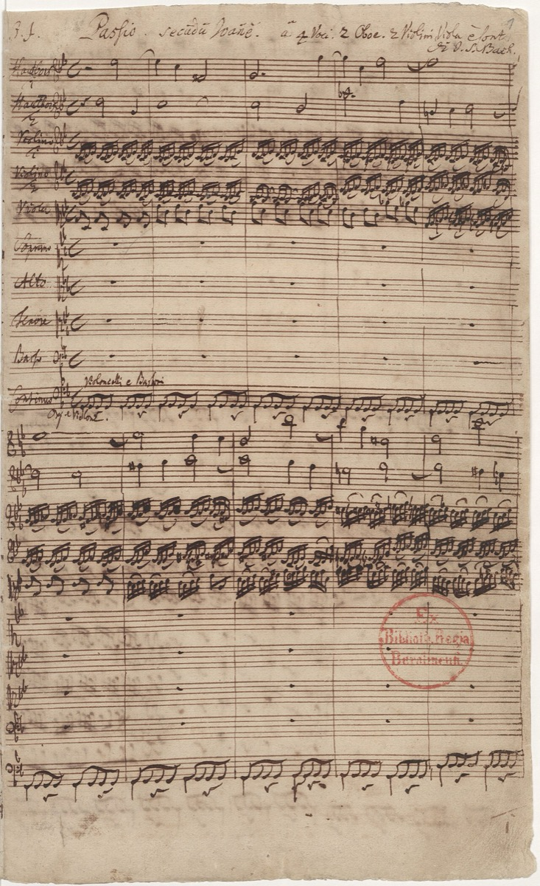

St. John Passion (Johannes-Passion)
Occasion — Good Friday Vespers, Nikolaikirche
Dating — Premiere Good Friday 1724; at least four versions (1724, 1725, c. 1732, 1749) — Bach never settled it.
Recommended recording — John Eliot Gardiner, Monteverdi Choir & English Baroque Soloists, Johannes-Passion (Archiv) · Recordings Shelf
Score — IMSLP (free score)

The St. John is the dramatic Passion. John's Gospel tells the story of the trial and crucifixion swiftly and confrontationally, and Bach set it with corresponding urgency — half the Matthew Passion's length, twice its velocity. Nothing announces that character faster than the opening chorus, Herr, unser Herrscher, which is unlike anything else in Bach: strings swirling in restless circles, winds grinding out dissonances against them, and above the turbulence the choir hammering one word — "Herr! Herr! Herr!" It is majesty invoked over chaos, and it tells you in the first minute what kind of Passion this will be: the opening's G minor sets colors that the work never fully brightens, and urgency is not an episode here but the medium itself — the arias and chorales must find their stillness inside a narrative that barely consents to pause for them. The work was first heard at Good Friday Vespers in the Nikolaikirche in 1724, and it remained unfinished business for the rest of Bach's life: at least four versions survive — from 1724, 1725, around 1732, and 1749 — and he never settled it. Any performance you hear is a choice among Bach's own alternatives, which is part of why the work rewards rehearing.
The place to concentrate your listening is the trial scene, and within it the turba choruses — the crowd's interjections, set with what can only be called documentary ferocity. This is what a mob sounds like in counterpoint. But the ferocity rides on structural cunning of an extraordinary order: Bach arranges the crowd's music symmetrically around the scene's center, the same music returning with opposite texts, so that the drama's most chaotic stretch is secretly a palindromic arch. And at the exact keystone of that arch he places a chorale, Durch dein Gefängnis — freedom through captivity. The theological paradox sits at the geometric center of the musical structure, the crowd raging around it in mirror image, and none of this is audible as scaffolding — only as mounting intensity. There is no clearer demonstration in the vocal music of how Bach builds drama and architecture out of the same materials at the same time.
Then there is the aria Es ist vollbracht — "it is finished." Bach gives the meditation on the last words to a viola da gamba, the old instrument of mourning, and the aria is exactly the elegy that scoring promises — until, at "Der Held aus Juda siegt," the hero of Judah triumphs, and the music breaks into a blaze of trumpet-figures. Death and victory in one page: the whole paradox of Good Friday compressed into a single aria, and one of those places where a listener who knows none of the theology can still hear precisely what is being claimed.
For anyone building a map of Bach's large forms, this is the comparison work. Set the two surviving Passions side by side and every parameter differs — narrative pacing, aria placement, the treatment of the crowd — and each work's choices throw the other's into relief. The craft essays use exactly that comparison, because no other pairing in the catalog shows so plainly that Bach's forms were decisions, not defaults: the same liturgical occasion, the same forces of choir, orchestra, and soloists, and two profoundly different dramatic machines. The revision history sharpens the point: a work Bach reopened in 1725, again around 1732, and again in 1749 was one he evidently considered permanently alive, and the questions he kept revisiting are the very parameters the comparison exposes.
One thing must be said plainly, because the card would be dishonest without it. John's text has the crowd as "die Jüden" — "the Jews" — and the work's performance history intersects with the history of Christian antisemitism. Modern performances and scholarship address this directly rather than around it, and this card keeps that reckoning visible: the same documented-versus-tradition discipline the timeline applies to anecdotes applies here to reception itself. Loving the work and looking straight at its history are not competing obligations; they are the same obligation.
The premiere and its Leipzig context: Good Friday 1724. The other side of the comparison: the St. Matthew Passion.
Gardiner, Music in the Castle of Heaven, ch. 10
Dürr, The Cantatas of J. S. Bach (Passion chronology)
→ full bibliography & links